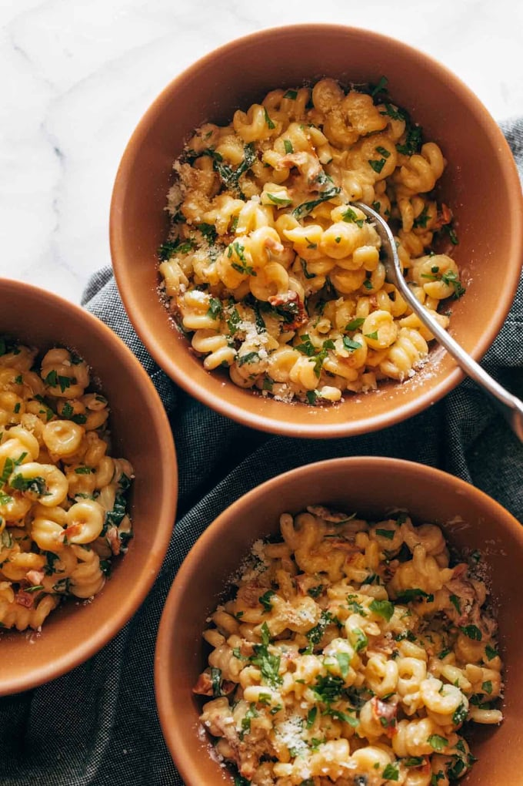

You are thisclose to enjoying Creamy Garlic Sun-Dried Tomato Pasta! Garlicky spirali noodles and tender sun-dried tomatoes in a creamy, luscious sauce with a heavy dusting of Parmesan cheese.
INGREDIENTS

Only a small amount of time and a few ingredients stand between you and a skillet full of creamy, garlicky, flavorful, romantic, and dangerously good pasta.
Tender sun-dried tomatoes, maybe some spinach, creamy sauce, bouncy noodles, and a heavy dusting of Parmesan. This is an urgent matter. I think you understand.
- 8 ounces DeLallo spirali pasta (okay, you don’t have to use spirali, but it is SO FUN)
- 2 cloves garlic, minced
- 1/4 cup DeLallo sun-dried tomatoes packed in oil, sliced or chopped
- about 1/3 cup dry white wine
- 2/3 – 3/4 cup heavy cream
- 1 cup spinach, chopped
- up to 1/2 cup reserved pasta water
- salt and pepper to taste
- a big bunch of chopped chives or parsley
- parmesan for serving
INSTRUCTIONS
- Cook the pasta: Cook the pasta according to package directions.
- Sauté the good stuff: Heat a skillet over medium heat. Use a little bit of the oil from the sun-dried tomatoes to sauté the garlic and sun-dried tomatoes until soft and fragrant, 2-3 minutes.
- Make the sauce: Add the wine; let it sizzle out and reduce so the flavor gets real good. Add the cream and spinach; bring to a simmer. Season with salt and pepper.
- Finish:Stir in the cooked pasta, adding the reserved pasta water as needed to help coat the noodles in the sauce. Finish with chives and Parmesan and a top-up on your glass of wine. SO GOOD.